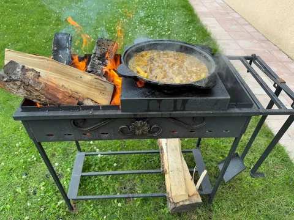

Готовил в субботу плов на мангале, и вот что подумал. Знаете, что общего у плова и хорошего продукта? Платформа.
Зирвак нужно варить долго, часа 2 хотя бы. Это основа вкуса. Так и платформа - залог качества, надежности и масштабируемости. Не надо тут спешить.
Мангал должен быть устойчивым и просторным, чтобы было удобно регулировать огонь. Так и инфраструктура должна помогать вам делать продукт, вы не должны с ней бороться и превозмогать.
Не жалейте лука - он все равно растворится в ноль, но вкус отдаст. Так и тесты - их много не бывает. Главное - помельче нарезать.
Без моркови плов - не плов. Без метрик/мониторингов/алертов/графиков продукт - не продукт. Просто не надо таким заниматься.
Специи - это дизайн-система. У вас точно есть свое чувство прекрасного, а иногда можно немного поимпровизировать, чтобы у всех был вау-эффект. Но острое не всем заходит, будьте осторожны.
Мясо - дело вкуса, а иногда - и религии. Постгрес, монга, мускуль - решать вам. Но оно должно быть очень хорошим и нежным. Готовить долго, и надо уметь. Но ради этого все и затевалось.
С рисом все в целом понятно. Тут можно звать продактов и пилить фичи.
Охапка дров - продукт готов!
